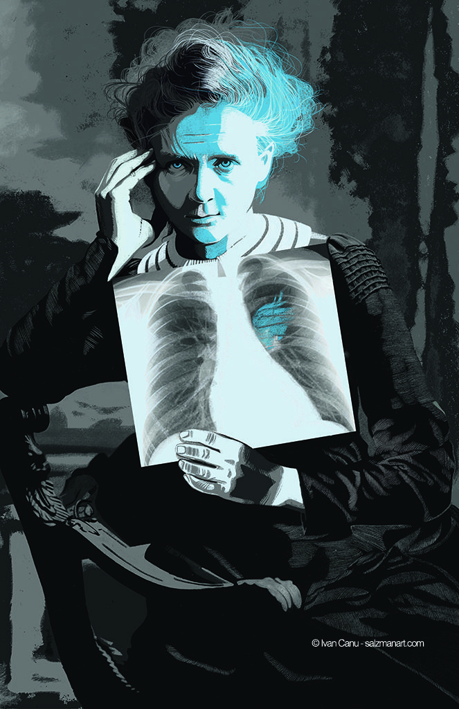

Marie Curie
"Nada na vida deve ser temido, somente compreendido.
Agora é hora de compreender mais para temer menos."
Marie Curie foi uma cientista pioneira na radioatividade, vencedora de dois Prêmios Nobel em Física e Química. Descobriu os elementos rádio e polônio, revolucionando a ciência e contribuindo para avanços médicos e tecnológicos. Vamos deslumbrar os segredos da radioatividade, e contemplar as descobertas dessa fascinante mulher cientista?
